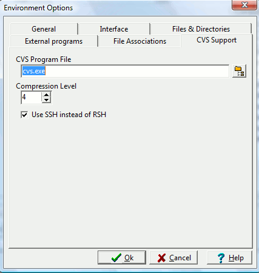

Concurrent Versioning System (CVS)
is a way to store your project files and keep track of any changes you
(and other developers) make. It allows you to not only backup
your current files, but also to rollback to earlier versions of your
files and undo changes.

CVS program file
Enter the name and directory of the CVS program executable.